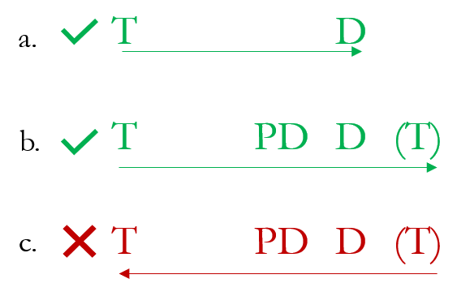
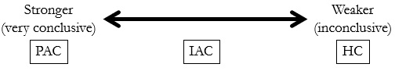

Open Music Theory：繁體中文版
和聲、終止式與樂句結尾入門
查看英文原文
Key Takeaways
- This chapter provides an introduction to the harmony section of Open Music Theory, then begins a discussion of how to create a sense of ending in a phrase. We focus exclusively on using I and V for now.
- Two larger concepts inform the way we present harmony here: harmonic function and the phrase model.
- Endings are often marked by cadences, of which there are two primary types: authentic cadences and half cadences.
- Authentic cadences involve the progression V–I. They are perfect when both harmonies are in root position and do [latex](\hat{1})[/latex] is in the soprano over tonic. If either of these conditions is not met, the authentic cadence is imperfect.
- Half cadences involve the progression x–V, where x is any of a variety of harmonies.
本部分著重西方古典音樂共同慣例時期的作曲家，如何在樂句中使用和聲。和聲是讓樂句朝向目標推進的重要因素之一。學習時，要同時記住兩個相關的大概念：和聲功能與樂句模型。
和聲功能將和弦分為三類：
樂句模型說明樂句中和聲功能的典型次序與流向。其原則是：樂句至少需要主功能與屬功能和聲，才會有發展方向。更常見的情況是再加入屬前和聲，加強朝向收束的感覺。樂句幾乎總是依模型由左向右進行，少有由右向左的情況；稍後會討論一些例外。範例 1彙整了這個模型。
{kind=link}

- 圖中 T＝主功能；
- PD＝屬前功能；
- D＝屬功能；
- 括號中的 T 表示末尾主功能可省略。
綠色勾號與右向箭頭表示模型的正常進行，紅色叉號與左向箭頭表示不採用的反向進行。
查看英文原文
Introduction to Harmony
In this section, we'll focus on how composers of common-practice Western classical music use harmony in a phrase. Harmony is one important component (among others) of creating a phrase's sense of forward motion toward a goal. As we study harmony, it's important to keep two larger related concepts in mind: harmonic function and the phrase model.
Harmonic function refers to three categories of chords:
- Tonic (T): Chords that sound stable, providing a sense of home or center. In Western classical music, the only chord that belongs to this category is I (in minor: i).
- Predominant (PD): Chords that transition away from tonic function toward dominant function. This category can be split into two groups:
- Strong predominants signal that a dominant function chord is imminent: IV and ii (in minor: iv and iio).
- Weak predominants transition away from tonic, typically moving to a stronger predominant: iii and vi (in minor: VII, III, and VI).
- Dominant (D): Chords that provide a sense of urgency to resolve toward the tonic chord: V and viio (the same in minor).
The phrase model refers to the typical order and flow of harmonic functions in a phrase. The principle of the phrase model is that a phrase needs at least tonic function and dominant function harmonies in order to exhibit a sense of trajectory. More often, phrases also include a predominant harmony to heighten the sense of trajectory toward closure. Phrases almost always progress from left to right in the phrase model, not from right to left, although we'll discuss some exceptions later. This is summarized in Example 1.
範例 2 呈現兩個樂句，以及兩種主要的終止感：（1）未完全結束；（2）已收束。第一個樂句在第 4 小節以半終止（HC）結束，聽來意猶未盡。第二個樂句從第 5 小節開始，在第 8 小節以聽來已收束的正格終止結束。PAC 標籤表示這是其中一種特定類型，稱為完全正格終止，下文會介紹。
查看英文原文
Introduction to Cadences
One way to create a sense of closure at the end of a phrase is through cadences—melodic and harmonic patterns that create goals, kind of like punctuation marks in literary sentences. They're important not only because they can help you determine phrase endings, but also because they help establish a key. As a result, listening for potential cadence points is typically a good first step in analysis.
Example 2 shows two phrases and the two main categories of cadence: (1) inconclusive and (2) conclusive. The first phrase ends in m. 4 with a half cadence (HC) that sounds inconclusive. The second phrase begins in m. 5 and ends in m. 8 with an authentic cadence that sounds conclusive. The label PAC marks this as a particular kind of authentic cadence called a perfect authentic cadence, discussed below.
Example 2. Two cadences in Joseph Boulogne, Chevalier de Saint-George's "Ballet No. 6" from L'amant anonyme, Act II (0:00–0:07).
當 V–I 進行在樂句末尾形成結束，小調中為 V–i，就構成正格終止。正格終止有兩種：
- 完全正格終止（PAC）必須同時符合以下兩項條件，見範例 2 第 8 小節：
- 主和弦上的最高聲部為 do [latex](\hat{1})[/latex]。
- V 與 I 都是原位。
- 若仍有 V–I，但以上任何一項條件不符合，就是不完全正格終止（IAC），如範例 3。例如：
- 主和弦上的最高聲部是 mi，小調中為 me [latex](\hat{3})[/latex]，如範例 3；或
- V、I，或兩者採用轉位。
查看英文原文
Authentic Cadences (they sound conclusive!)
An authentic cadence occurs when the harmonic progression V–I (or V–i in minor) marks the end of a phrase. There are two kinds of authentic cadence:
- A perfect authentic cadence (PAC) occurs when both of the following conditions are met (Example 2, m. 8):
- Do [latex](\hat{1})[/latex] is in the soprano over the tonic chord
- Both V and I are in root position
- An imperfect authentic cadence (IAC) occurs if either of the above two conditions isn't met, but V–I is still involved (Example 3). For instance, an IAC can occur when:
- Mi (me in minor) [latex](\hat{3})[/latex] is in the soprano over the tonic chord (as in Example 3), or
- V, I, or both harmonies are inverted
Example 3. An imperfect authentic cadence (IAC) in Fanny Hensel, "Ferne" Op. 9, No. 2 (0:00–0:14).
目前先把可用和弦限於 I 與 V，小調中為 i 與 V，以便學習聲部進行的基本技巧。
查看英文原文
Half Cadences (they sound inconclusive!)
A half cadence (HC) occurs when a phrase ends on V (Example 2, m. 4). A variety of chords can precede V, so we often refer to the harmonic progression that marks HCs as "x–V."
For now, we'll restrict our vocabulary to only I and V chords (or i and V in minor) so we can learn some basic techniques of voice-leading.
PAC 能帶來明確的最終結束感，因此是作曲家可用的最強終止類型；HC 聽起來尚未結束，因而最弱。IAC 的特別之處，在於它的終止強度位於 HC 與 PAC 之間（範例 4）。 
{kind=link}
- Stronger（very conclusive）＝較強、結束感很明確；
- Weaker（inconclusive）＝較弱、意猶未盡。
PAC＝完全正格終止，IAC＝不完全正格終止，HC＝半終止。
範例 4。終止強度的連續範圍。
IAC 有許多寫法：理論上，作曲家可以搭配不同的和弦轉位與旋律音階級數，因此也能選擇讓 IAC 的結束感較強或較弱。
前面的範例 3 終止感較強：它使用原位 V–i，最高聲部為 me [latex](\hat{3})[/latex]；位置在一句歌詞的結尾，使用二分音符，後面有休止符，而且接下來的音樂聽起來像新樂句。
範例 5 中可能的 IAC 相對較弱：它使用 V6–I，該瞬間很快就過去了。後面的材料既可能被理解為延續尚未結束的樂句，也可能呼應剛結束樂句的開頭；後一種聽法會加強把第 5 小節視為 IAC 的理由。演出者對範例 5 是否真的有 IAC，可能看法不同，並據此調整演奏。
範例 5。Schubert 鋼琴奏鳴曲 D. 845，第三樂章中可能的不完全正格終止。
情況還可能更複雜：作曲家常用符合 IAC 描述、卻沒有真正結束樂句的進行，來避開 PAC。在範例 6 中，第 8 小節有一個可能的 IAC；但第 9 小節開始重複第 5 小節的材料，比較第 9 小節低音與第 5 小節最高聲部，就會聽到這段音樂像是在重新準備終止，試圖得到比第 8 小節更強的收束。因此，譜上將第 8 小節的終止標籤畫掉，表示這個終止已被化解（subverted），沒有真正成立。
可能性這麼多，如何判定一處是否真的是 IAC？下一節「聽辨終止式」提供一些幫助。
查看英文原文
Cadential Strength and the IAC
PACs are the strongest kind of cadence available to a composer because of the sense of finality they can create, and HCs are the weakest kind of cadence because of their unfinished sound. IACs are special because they occupy the space between HCs and PACs in terms of cadential strength (Example 4).
Example 4. Spectrum of cadential strength.
Since there are many ways to compose an IAC (a composer can theoretically use various combinations of inverted chords and scale degrees in the melody), a composer can choose to make an IAC more or less strong.
The cadence in Example 3 above is relatively strong: it uses root position V–i with me [latex](\hat{3})[/latex] in the soprano, it comes at the end of a sentence in the lyrics, it uses a half note, it's followed by a rest, and the music that follows sounds like a new phrase.
The potential IAC in Example 5 is comparably weaker: it uses V6–I, the moment goes by relatively quickly, and it's followed by material that could easily be understood as continuing a phrase that's under way or as referencing the beginning of a phrase that has just concluded, something that would strengthen reading m. 5 as an IAC. Performers may disagree on whether Example 5 contains an IAC or not, and they may adjust their playing accordingly.
Example 5. A potential IAC in Schubert's Piano Sonata D. 845, III.
An additional complication is that composers often avoid creating a PAC using progressions that fit the description of an IAC, but that don't mark the end of a phrase. In Example 6, m. 8 contains a potential IAC, but when m. 9 begins to repeat the material from m. 5 (compare the bass voice in m. 9 with the soprano in m. 5) it sounds like the passage is trying the run-up to the cadence again to achieve something stronger than the potential IAC at m. 8. We indicate that the cadence in m. 8 is subverted by crossing the label out on the score.
Example 6. Avoiding a cadence in Beethoven's Piano Sonata Op. 2, no. 3, I, mm. 1–13.
With so many possibilities, how can we determine what counts as a true IAC? The next section ("Hearing Cadences") offers some help.
聽出終止式固然有直覺成分，但也是可以逐漸磨練的能力。建議依以下步驟練習：
- 先聆聽，標出可能的停頓、目標或收束位置。
- 初學者一開始常把太多位置標成終止。有個簡單原則：除非片段速度相當慢，兩小節長的樂句並不常見。
- 接著，檢查這些可能終止位置的和聲：
- x–V：可能的半終止。
- V–I：可能的正格終止。
- 若 I 上方的最高聲部是 do [latex](\hat{1})[/latex]，而且兩個和弦都是原位，便可能是 PAC。
- 若 I 上方的最高聲部是其他音，例如 mi [latex](\hat{3})[/latex] 或 sol [latex](\hat{5})[/latex]，便可能是 IAC。
- 若 V、I，或兩者採轉位，便可能是 IAC。
- 若不包含以上兩種進行，就不是可能的終止式。這不表示它沒有任何結束感，只是說它不構成終止式。[1]
- 最後，聽聽每個可能的終止位置之後發生什麼。
查看英文原文
Hearing Cadences
While there is certainly a degree of intuition involved with hearing cadences, it's also a skill that can be honed over time. We recommend listening for cadences following this process:
- At first, listen and mark potential points of rest, goal, or closure.
- It's common for students to initially mark too many cadences. One rule of thumb is that unless an excerpt's tempo is quite slow, it's not common for phrases to be two measures long.
- Next, check the harmonies involved in these potential cadence points:
- x–V = potential HC
- V–I = potential AC
- If do [latex](\hat{1})[/latex] is in the soprano over I and both harmonies are in root position, it's a potential PAC.
- If something else like mi [latex](\hat{3})[/latex] or sol [latex](\hat{5})[/latex] is in the soprano over I, it's a potential IAC.
- If V, I, or both harmonies are inverted, it's a potential IAC.
- If it doesn't involve one of the above two progressions, then it's not a potential cadence. (Note that this doesn't mean it doesn't represent some kind of ending. It just means it's not a cadence.[1])
- Finally, listen for what happens after each potential cadence point.
- Since true cadences mark the end of a phrase, it's very common for cadences to be followed by a sense of beginning. This "beginning" may be a repetition of the beginning of the phrase that just ended, or it may be new material that starts a new phrase. Hearing a sense of beginning following a cadence point is a great way to help verify that what you've marked as a potential cadence is indeed a true cadence point.
- If, instead, you hear repetition of material from the middle of the previous phrase, your potential cadence may not be a true cadence. Instead, it likely represents a potential cadence point that has been subverted.
寫作 PAC 或 IAC
- 確定調性。
- 先寫完整的低音：sol–do [latex](\hat5-\hat1)[/latex]。
- 再寫完整的最高聲部：
- PAC：re–do 或 ti–do [latex](\hat2-\hat1[/latex] 或 [latex]\hat7-\hat1)[/latex]。
- IAC：re–mi 或 sol–sol [latex](\hat2-\hat3[/latex] 或 [latex]\hat5-\hat5)[/latex]。
- 補入內聲部，逐一思考：
- 低音與最高聲部已經有哪些音？
- 還需要哪些音，才能補齊和弦？
- 要重複哪個音？原位和弦通常重複低音。
- 若是小調，記得在 V 中使用導音 ti [latex](\uparrow\hat7)[/latex]，使它成為大三和弦，而非小三和弦，藉此產生走向主和弦的動力。
範例 7。寫作大調完全正格終止。
範例 8。寫作小調完全正格終止。
範例 9。寫作大調不完全正格終止。
範例 10。寫作小調不完全正格終止。
查看英文原文
Writing Authentic Cadences (with triads only)
The steps for writing a PAC or IAC are summarized in the box below and illustrated in Examples 7–10.
Writing a PAC or IAC
- Determine the key
- Write the entire bass: sol–do [latex](\hat5-\hat1)[/latex]
- Write the entire soprano:
- PAC: re–do or ti–do [latex](\hat2-\hat1[/latex] or [latex]\hat7-\hat1)[/latex]
- IAC: re–mi or sol–sol [latex](\hat2-\hat3[/latex] or [latex]\hat5-\hat5)[/latex]
- Fill in the inner voices by asking:
- What notes do I already have in the bass and soprano?
- What notes do I need to complete the chord?
- What note will I double? (Remember, in root position chords, it's common to double the bass.)
- If you're writing in minor, remember that you need to use the leading-tone, ti [latex](\uparrow\hat7)[/latex], in your V chord (making it a major triad, not minor) to give it momentum toward the tonic.
Example 7. Writing a PAC in a major key.
Example 8. Writing a PAC in a minor key.
Example 9. Writing an IAC in a major key.
Example 10. Writing an IAC in a minor key.
寫作半終止
- 確定調性。
- 先寫完整的低音：do–sol [latex](\hat1-\hat5)[/latex]。目前只用 I 與 V；稍後會看到，V 前面更常使用其他和弦。
- 再寫完整的最高聲部：do–ti 或 mi–re [latex](\hat1-\hat7[/latex] 或 [latex]\hat3-\hat2)[/latex]。sol–sol [ [latex]\hat5-\hat5[/latex] ] 也可能，但不常見。
- 補入內聲部，逐一思考：
- 已經有哪些音？
- 還需要哪些音，才能補齊和弦？
- 要重複哪個音？原位和弦通常重複低音。
- 若是小調，記得在 V 中使用導音 ti [latex](\uparrow\hat{7})[/latex]，使它成為大三和弦，而非小三和弦。
範例 11。寫作大調半終止。
範例 12。寫作小調半終止。
- 和聲、終止式與樂句結尾入門（PDF、Word 檔 .docx）：只用大、小調中的 I（或 i）與 V，練習聲部寫作並辨識終止式。
- 和聲、終止式與樂句結尾入門——不含四部和聲寫作（PDF、MuseScore 檔 .mscz）：只用大、小調中的 I（或 i）與 V，寫作並辨識終止式。
媒體來源與授權
- 〈Phrase_Model〉© John Peterson，採用 CC BY-SA 姓名標示—相同方式分享授權。
- 〈Example_3_Cadence_Strength_Spectrum〉。
- 例如，有時旋律暗示結尾，和聲卻沒有配合；有時和聲暗示結束，旋律卻不願收束。終止式是特別的目標位置，因為旋律與和聲都在這裡同意樂句應當結束。↵
查看英文原文
Writing Half Cadences (using I and V only)
The steps for writing a HC are summarized in the box below and illustrated in Examples 11 and 12.
Writing a HC:
- Determine the key
- Write the entire bass: do–sol [latex](\hat1-\hat5)[/latex] (note: for now, we'll use only I and V chords, although we'll see later that other chords more commonly precede V)
- Write the entire soprano: do–ti or mi–re [latex](\hat1-\hat7[/latex] or [latex]\hat3-\hat2)[/latex] (note: sol–sol [ [latex]\hat5-\hat5[/latex] ] is possible, but not common)
- Fill in the inner voices by asking:
- What notes do I already have?
- What notes do I need to complete the chord?
- What note will I double? (Remember, in root position chords, it's common to double the bass.)
- If you're writing in minor, remember to use the leading-tone, ti [latex](\uparrow\hat{7})[/latex], in your V chord, making it a major triad, not minor.
Example 11. Writing a HC in a major key.
Example 12. Writing a HC in a minor key.
- Introduction to harmony, cadences, and phrase endings (.pdf, .docx). Asks students to part-write and identify cadences using only I (or i) and V chords in major and minor.
- Introduction to harmony, cadences, and phrase endings—no four-part writing (.pdf, .mscz). Asks students to write and identify cadences using only I (or i) and V chords in major and minor.
Media Attributions
- Phrase_Model © John Peterson is licensed under a CC BY-SA (Attribution ShareAlike) license
- Example_3_Cadence_Strength_Spectrum
- Sometimes, for example, the melody suggests an ending, but the harmony doesn't participate. Or, sometimes the harmony suggests an end, but the melody refuses to close. Cadences are special goal points because they represent places where both the melody and harmony agree on a phrase ending. ↵